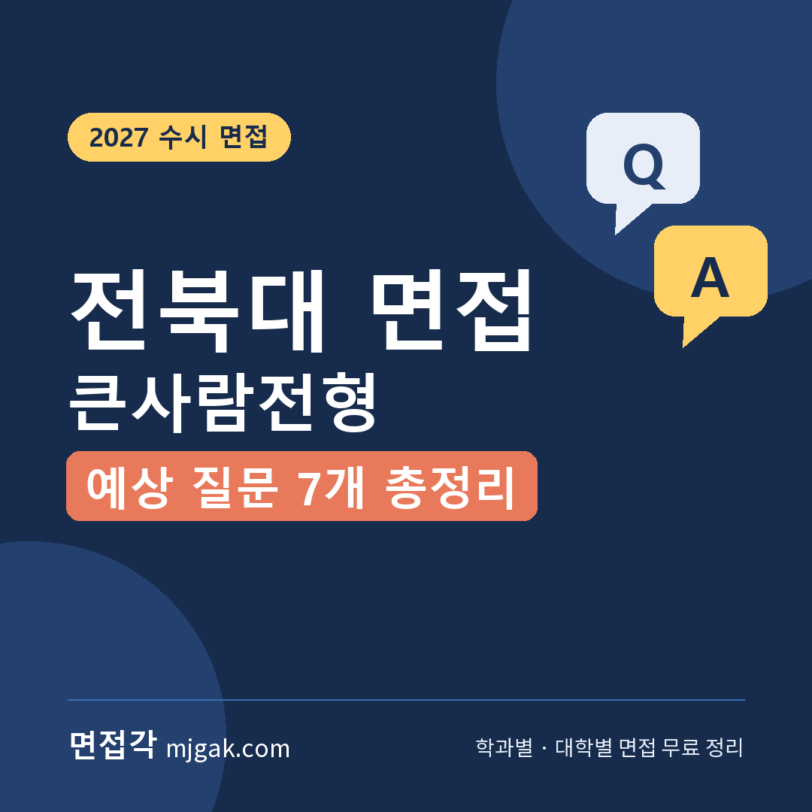
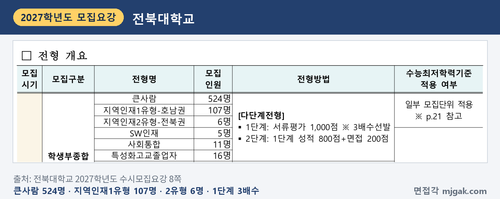
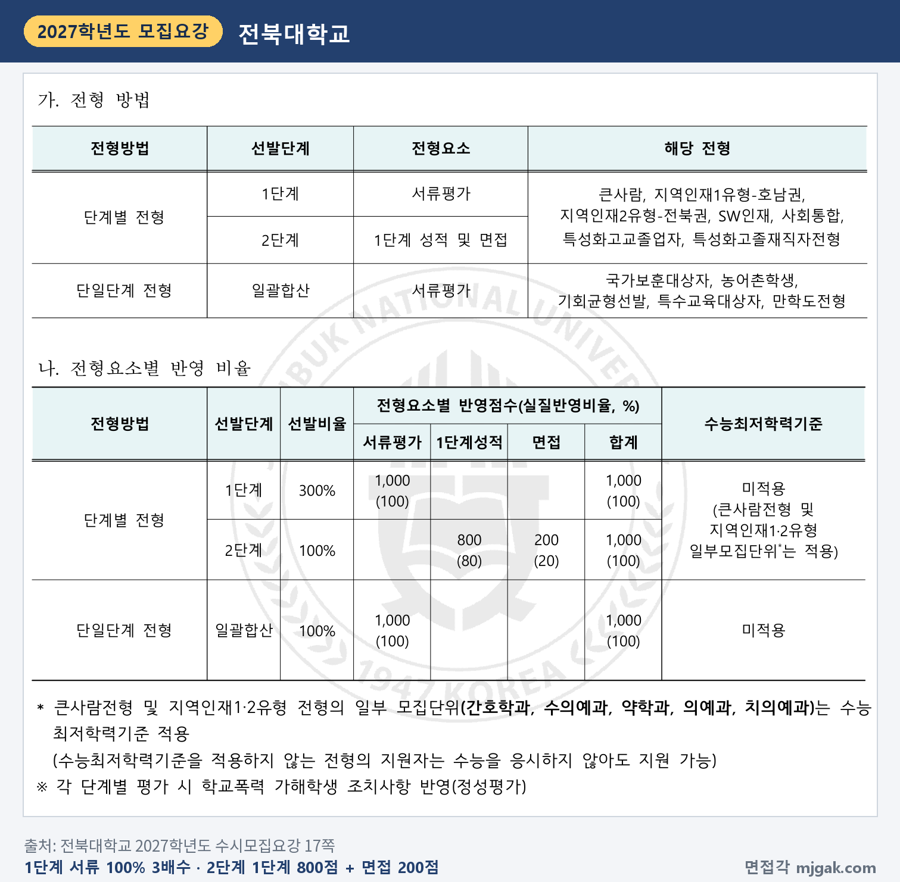
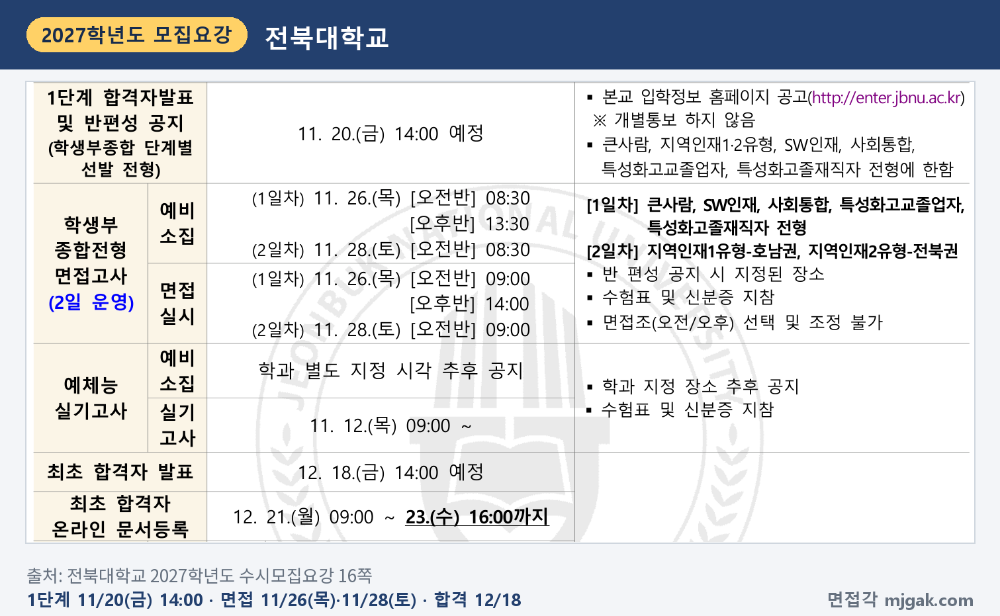
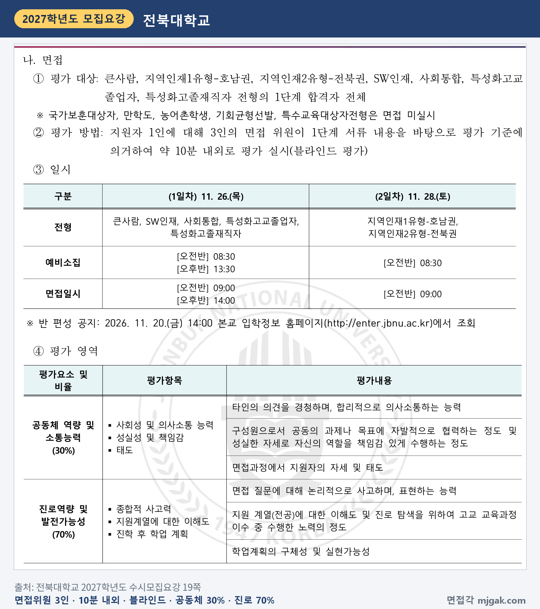
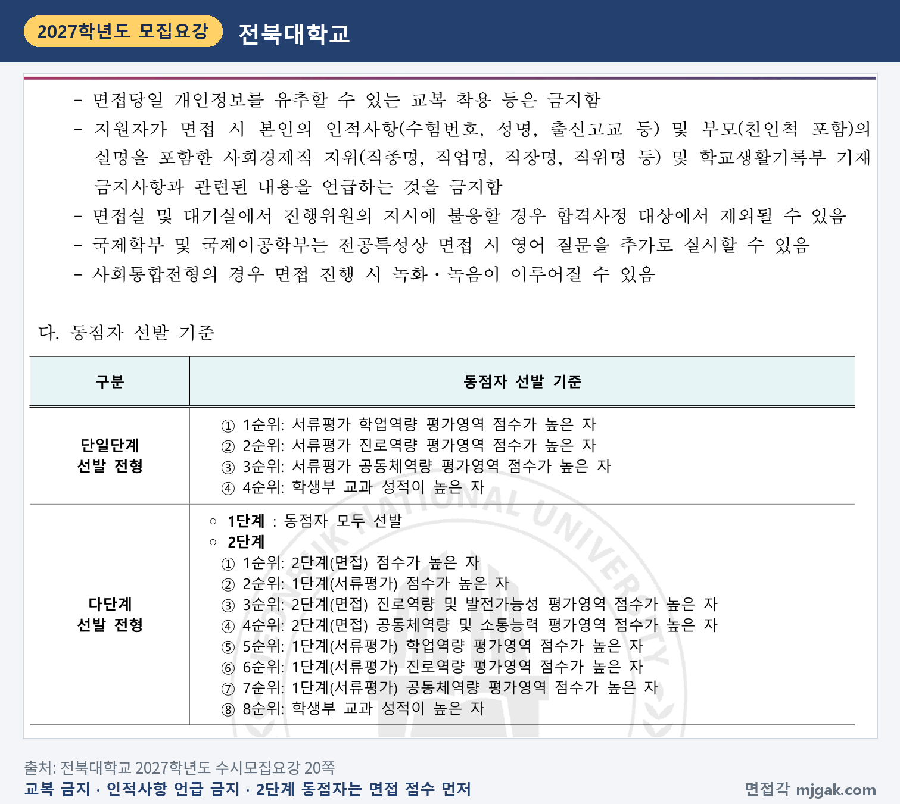
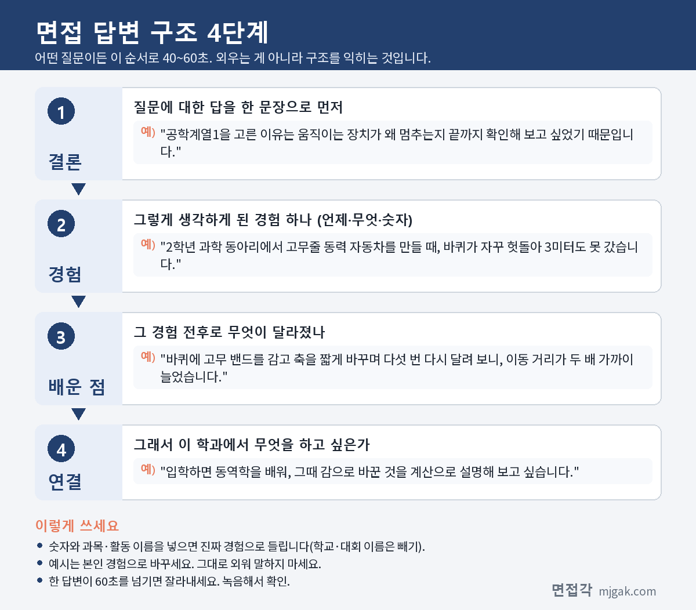
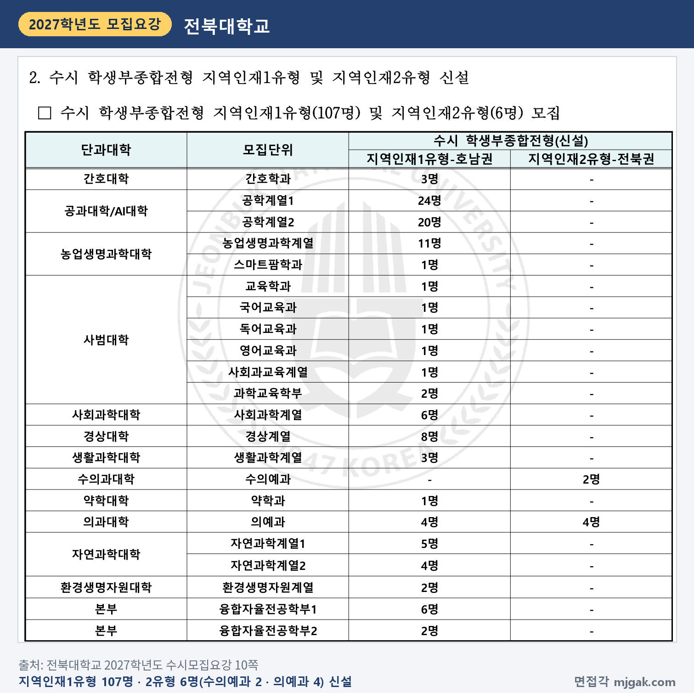
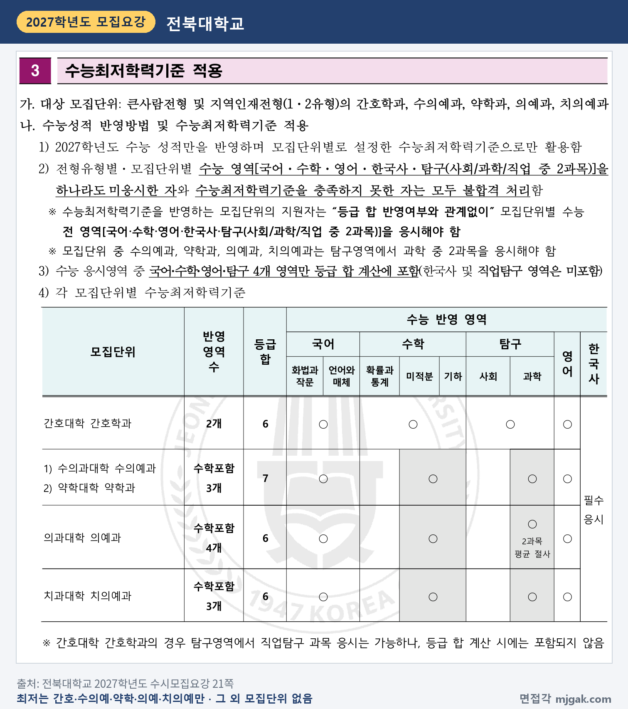

Ctrl+V (서식 유지됨)제목
본문 (이 영역 전체가 복사됩니다)
📷 여기에 이미지 넣기 — 썸네일 — thumb-jbnu.png (대표 이미지로 지정)
전북대 큰사람전형에서 먼저 챙길 것은 날짜입니다. 수능은 11월 19일(목), 1단계 합격자 발표와 반 편성 공지는 다음 날인 11월 20일(금) 14시, 면접은 11월 26일(목)입니다. 2027학년도 학생부종합 면접은 이틀로 운영되고, 2027학년도에 새로 생긴 지역인재1·2유형은 11월 28일(토)에 면접을 봅니다. 2단계는 1단계 성적 800점과 면접 200점을 합산하고, 면접위원 3명이 지원자 1명을 10분 내외로 보는 블라인드 면접입니다. 이 글은 전북대학교 2027학년도 수시모집요강을 바탕으로 큰사람전형의 전형 방법, 일정, 면접 방식, 예상 질문 7개, 준비 순서를 정리하고, 지역인재1·2유형은 다른 점만 따로 묶었습니다. 전북대 큰사람전형이나 지역인재전형(학생부종합)에 지원한 고3과 재수생이 읽으시면 됩니다.
1. 큰사람전형, 2027학년도에는 어떻게 보나
큰사람전형은 학생부종합전형으로 524명을 뽑습니다. 모집단위별로 보면 공학계열1 104명, 농업생명과학계열 77명, 경상계열·사회과학계열 각 43명, 공학계열2 34명, 과학교육학부 21명, 국제학부 18명 등이고, 의예과 5명, 치의예과 4명, 수의예과 3명, 약학과 2명, 간호학과 7명도 이 전형으로 뽑습니다(13·14쪽). 지원자격은 국내 고등학교 졸업(예정)자로 학생부 성적이 있는 자 또는 동등 학력 소지자입니다(24쪽). 공학계열1처럼 계열로 뽑는 모집단위는 15쪽에서 그 안에 열린 학과를 확인하세요.
📷 여기에 이미지 넣기 — 캡처 1 — 전북대학교 2027학년도 수시모집요강 8쪽: jbnu-2027-kps-summary.png
전형 방법은 1단계에서 서류평가 100%(1,000점)로 모집인원의 3배수를 뽑고, 2단계에서 1단계 성적 800점(80%)과 면접 200점(20%)을 합산합니다(17쪽). 이 글에서 계산하면 1단계 합격 규모는 공학계열1 312명, 경상계열 129명입니다. 1단계 동점자는 모두 뽑습니다(20쪽). 수능최저학력기준은 간호학과, 수의예과, 약학과, 의예과, 치의예과에만 있고, 나머지 모집단위는 없습니다(17·21쪽).
📷 여기에 이미지 넣기 — 캡처 2 — 전북대학교 2027학년도 수시모집요강 17쪽: jbnu-2027-kps-method.png
면접에 결시하면 불합격입니다(3·19쪽). 2단계 동점자는 면접 점수, 1단계 점수, 면접의 진로역량 및 발전가능성, 면접의 공동체역량 및 소통능력 순으로 가립니다(20쪽). 학교폭력 가해학생 조치사항은 각 단계 평가에서 정성평가로 반영합니다(17쪽). 전형료는 50,000원이고, 1단계 불합격자에게는 12,000원을 돌려줍니다(96·97쪽).
2. 언제 보나: 수능 다음 날 1단계 발표, 11월 26일(목) 면접
- 11월 19일(목): 수능
- 11월 20일(금) 14시: 1단계 합격자 발표 및 반 편성 공지(입학정보 홈페이지, 개별 통보 없음)
- 11월 26일(목): 큰사람전형 면접. 오전반 예비소집 8시 30분·면접 9시, 오후반 예비소집 13시 30분·면접 14시
- 11월 28일(토): 지역인재1·2유형 면접. 오전반 예비소집 8시 30분·면접 9시
- 12월 18일(금) 14시: 최초 합격자 발표
- 12월 21일(월) 9시 ~ 23일(수) 16시: 온라인 문서등록(16·19쪽)
1단계 발표에서 큰사람전형 면접까지는 6일, 수능에서 면접까지는 7일입니다(이 글에서 계산한 값). 오전반·오후반 면접조는 고를 수도 바꿀 수도 없으니, 11월 20일 14시에 내 면접조와 장소를 직접 확인하세요(16·19쪽).
📷 여기에 이미지 넣기 — 캡처 3 — 전북대학교 2027학년도 수시모집요강 16쪽: jbnu-2027-kps-schedule.png
3. 면접은 어떻게 보나
면접위원 3인이 지원자 1인을 1단계 서류 내용을 바탕으로 약 10분 내외로 평가하고, 블라인드로 진행합니다(19쪽). 평가 영역은 두 가지입니다(19쪽).
- 공동체 역량 및 소통능력 30%: 사회성 및 의사소통 능력, 성실성 및 책임감, 태도
- 진로역량 및 발전가능성 70%: 종합적 사고력, 지원계열에 대한 이해도, 진학 후 학업 계획
면접 200점으로 환산하면 진로역량 및 발전가능성이 140점, 공동체 역량 및 소통능력이 60점입니다(이 글에서 계산한 값). "진학 후 학업 계획"의 평가내용은 "학업계획의 구체성 및 실현가능성"입니다.
📷 여기에 이미지 넣기 — 캡처 4 — 전북대학교 2027학년도 수시모집요강 19쪽: jbnu-2027-kps-interview.png
유의사항도 함께 보세요. 면접에 불참하거나 휴대폰 등 통신기기를 소지하면 불합격입니다(19쪽). 면접 중 수험번호, 성명, 출신고교 같은 인적사항과 부모(친인척 포함)의 실명·직업 등 사회경제적 지위를 말하면 안 됩니다. 국제학부와 국제이공학부는 영어 질문을 추가로 할 수 있습니다(20쪽). 수의과대학·환경생명자원대학 소속 모집단위 지원자는 익산 특성화캠퍼스에서 면접을 봅니다(4·15쪽).
📷 여기에 이미지 넣기 — 캡처 5 — 전북대학교 2027학년도 수시모집요강 20쪽: jbnu-2027-kps-rules.png
서류평가는 다수의 입학사정관이 블라인드로 정성 종합 평가하고, 학업역량 40%, 진로역량 40%, 공동체역량 20%를 봅니다(18쪽). 22쪽의 모집단위별 전공참고교과 이수 여부와 실적은 서류평가와 면접에서 참고자료로 씁니다. 면접 질문이 이 서류에서 나오니, 고른 과목과 탐구를 먼저 정리해 두세요.
4. 평가 영역에서 나올 예상 질문 7개와 답변법
전북대는 2027학년도 모집요강에 면접 질문을 싣지 않았습니다. 아래 7개는 19쪽 평가 영역으로 정리한 예상 질문이고, 괄호의 평가 항목은 이 글에서 연결한 것입니다. 예시 답변은 모집단위를 바꿔 쓴 가상의 예시이니 본인 학생부의 활동으로 바꾸세요.
▶ 질문 1. 이 계열을 고른 이유와, 그 진로를 위해 고교 과정에서 한 노력을 말해 보세요. (지원계열에 대한 이해도)
왜 묻나: 평가내용이 "지원 계열(전공)에 대한 이해도 및 진로 탐색을 위하여 고교 교육과정 이수 중 수행한 노력의 정도"입니다.
답변 구조: 고른 이유 한 문장 → 그 이유가 된 활동 → 직접 바꿔 본 것 → 입학 후 배울 것.
답변 예시 (공학계열1):
"공학계열1을 고른 이유는 움직이는 장치가 왜 멈추는지 끝까지 확인해 보고 싶었기 때문입니다. 2학년 과학 동아리에서 고무줄 동력 자동차를 만들 때, 바퀴가 자꾸 헛돌아 3미터도 못 갔습니다. 바퀴에 고무 밴드를 감고 축을 짧게 바꾸며 다섯 번 다시 달려 보니, 이동 거리가 두 배 가까이 늘었습니다. 입학하면 동역학을 배워, 그때 감으로 바꾼 것을 계산으로 설명해 보고 싶습니다."
주의: "어릴 때부터 좋아해서"로 끝내지 말고, 고교 때 한 활동 하나를 숫자와 함께 넣으세요.
▶ 질문 2. 학생부에 적힌 탐구 하나를 골라 처음 질문부터 결론까지 설명해 보세요. (종합적 사고력)
왜 묻나: 종합적 사고력의 평가내용이 "면접 질문에 대해 논리적으로 사고하며, 표현하는 능력"입니다.
답변 구조: 처음 질문 → 처음 결론 → 결론을 고친 계기 → 바뀐 결론.
답변 예시 (수의예과):
"반려견 사료 다섯 종의 성분표를 모아 단백질과 지방 비율을 표로 비교했습니다. 처음에는 단백질이 많을수록 좋은 사료라고 결론 내렸는데, 선생님께서 '나이 든 개에게도 그럴까?'라고 물으셨습니다. 성장기와 노령기의 권장 기준을 다시 찾아보니 필요한 비율이 달라서, 결론을 '나이에 맞는 비율이 중요하다'로 고쳤습니다. 수의예과에서 동물 영양을 제대로 배우고 싶습니다."
주의: 학생부에 적힌 용어는 모두 다시 설명할 수 있어야 합니다.
▶ 질문 3. 입학하면 1~2학년 때 무엇을 배우고 싶나요? (진학 후 학업 계획)
왜 묻나: 진학 후 학업 계획은 "학업계획의 구체성 및 실현가능성"을 봅니다.
답변 구조: 관심 분야 한 문장 → 그 관심이 생긴 활동 → 학년별로 배울 것 → 그 뒤 하고 싶은 것.
답변 예시 (경상계열):
"저는 유통과 무역에 관심이 있습니다. 3학년 경제 시간에 전통시장과 대형마트의 같은 채소 가격을 4주 동안 비교했는데, 가격 차이가 운송과 보관 방식에서 생긴다는 것을 알았습니다. 1학년에는 경제와 회계의 기초를 다지고, 2학년에는 국제무역학과의 무역 수업을 들어 보고 싶습니다. 나중에는 지역 농산물을 해외로 파는 일을 해 보고 싶습니다."
주의: 경상계열에는 경영학과, 경제학부, 국제무역학과, 회계학과가 있습니다(15쪽). 학과 홈페이지 교육과정에서 과목 이름을 직접 찾아 넣으세요.
📷 여기에 이미지 넣기 — 이미지 1 — 제미나이 생성: 늦가을 햇살이 드는 캠퍼스 라운지에서 고무줄 동력 자동차·청진기와 강아지 인형·동전과 라벨 없는 막대그래프·혈압계·모종 화분 옆에서 답하는 여학생(실사), 창밖 정원에 표범상(전북대 상징동물 표범) / "제미나이 프롬프트 1"
(AI로 만든 이미지로, 실제 캠퍼스와 다를 수 있습니다)
▶ 질문 4. 공동의 과제에서 맡지 않은 일까지 나서서 한 경험이 있나요? (성실성 및 책임감)
왜 묻나: 평가내용에 "구성원으로서 공동의 과제나 목표에 자발적으로 협력하는 정도"가 있습니다.
답변 구조: 과제와 내 역할 → 생긴 문제 → 내가 나선 방법 → 결과와 배운 점.
답변 예시 (간호학과):
"보건 수업 모둠 과제로 손 씻기 영상을 만들 때, 촬영 담당 친구가 아파서 빠졌습니다. 저는 대본 담당이었지만 촬영도 맡겠다고 하고, 대본을 30초 단위로 나눠 장면마다 필요한 컷을 표로 정리했습니다. 정해진 날에 영상을 냈고, 다른 반 수업에서도 쓰였습니다. 간호학과에서도 빈자리를 먼저 메우는 사람이 되고 싶습니다."
주의: "저희 모둠은"보다 "저는 ○○을 맡았습니다"로 시작하세요.
▶ 질문 5. 오래 맡은 역할을 끝까지 해낸 경험을 말해 보세요. (성실성 및 책임감)
왜 묻나: 같은 항목에 "성실한 자세로 자신의 역할을 책임감 있게 수행하는 정도"가 있습니다.
답변 구조: 역할과 기간 → 생긴 문제 → 바꾼 방법 → 배운 점.
답변 예시 (농업생명과학계열):
"2학년 1년 동안 학교 텃밭 물 주기를 맡았습니다. 여름방학에 당번이 비어 고추 모종이 시들었고, 그 뒤 방학 당번표를 만들어 친구 6명과 나눠 맡았습니다. 비가 오는 날은 건너뛴다고 미리 알려 물을 너무 많이 주는 일도 줄였습니다. 작물은 매일의 작은 관리로 자란다는 것을 배웠습니다."
주의: 기간과 횟수를 숫자로 말하세요.
▶ 질문 6. 다른 사람의 의견을 듣고 생각을 바꾼 경험이 있나요? (사회성 및 의사소통 능력)
왜 묻나: 평가내용이 "타인의 의견을 경청하며, 합리적으로 의사소통하는 능력"입니다.
답변 구조: 내 처음 의견 → 상대의 의견 → 다시 따져 본 방법 → 바뀐 의견.
답변 예시 (사회과학계열):
"통합사회 토론에서 청소년 SNS 사용 시간 제한에 찬성했는데, 상대 친구가 시간보다 무엇을 보는지가 문제라고 했습니다. 친구의 근거를 메모해 다시 읽어 보니, 제 근거는 사용 시간 하나뿐이었습니다. 그래서 마무리 발언에서 '시간 제한과 함께 본 내용을 스스로 기록하게 하자'로 제안을 고쳤습니다. 여러 입장을 자료로 비교하는 법을 사회과학계열에서 배우고 싶습니다."
주의: 상대를 깎아내리지 말고, 상대 의견에서 가져온 것을 말하세요.
▶ 질문 7. 방금 말한 탐구를 다시 한다면 무엇을 바꾸겠나요? (종합적 사고력)
왜 묻나: 앞의 답을 다시 따져 보게 하는 질문은 "논리적으로 사고하며, 표현하는 능력"에서 예상할 수 있는 형태입니다. 이 연결은 이 글의 해석입니다.
답변 구조: 바꿀 것 한 문장 → 앞 탐구의 한계 → 바꾼 뒤 기대하는 차이.
답변 예시 (수의예과, 질문 2에 이어서):
"다시 한다면 비교 기준부터 정하겠습니다. 그때는 사료 포장지 문구를 그대로 기준으로 삼아서 결론이 흔들렸습니다. 근거가 분명한 영양 기준을 먼저 정하고 나이별로 나눠 비교하면, 결론을 더 빨리 바르게 낼 수 있다고 생각합니다."
주의: 질문을 끝까지 듣고 묻는 것에 먼저 답하세요. 모르면 잠깐 생각해도 됩니다.
5. 답변은 이 4단계로 만드세요
어떤 질문이든 결론 → 경험 → 배운 점 → 연결 순서로 40~60초 안에 말하세요. 아래 도식은 질문 1을 4단계로 쪼갠 것입니다.
📷 여기에 이미지 넣기 — 도식 — structure-jbnu.png
6. 지역인재1·2유형은 여기가 다릅니다
지역인재1유형(107명)과 지역인재2유형(6명)은 2027학년도에 새로 생긴 학생부종합전형입니다. 1단계 3배수, 2단계 1단계 800점 + 면접 200점, 면접 방식과 평가 영역은 큰사람전형과 같습니다(17·19쪽). 다른 점은 아래와 같습니다.
- 지원자격: 1유형은 호남권(전북특별자치도, 광주광역시, 전라남도) 고교에서 입학부터 졸업까지 전 과정을 이수한 사람입니다(25쪽). 2유형은 전북특별자치도 고교에서 전 과정을 이수하고, 입학일부터 졸업일까지 부 또는 모와 학생 모두 전북에 거주해야 합니다(27쪽). 영재학교, 대안학교, 학력인정고, 외국고, 검정고시는 둘 다 지원할 수 없습니다.
- 모집단위: 1유형은 공학계열1 24명, 공학계열2 20명, 농업생명과학계열 11명, 경상계열 8명, 사회과학계열·융합자율전공학부1 각 6명, 의예과 4명 등입니다. 2유형은 수의예과 2명, 의예과 4명뿐입니다(10쪽).
- 면접일: 11월 28일(토) 오전반 9시, 예비소집 8시 30분입니다(16·19쪽). 1단계 발표에서 8일, 수능에서 9일 뒤입니다(이 글에서 계산한 값). 1유형 환경생명자원계열과 2유형 수의예과는 익산 특성화캠퍼스에서 면접을 봅니다(4·10쪽).
📷 여기에 이미지 넣기 — 캡처 6 — 전북대학교 2027학년도 수시모집요강 10쪽: jbnu-2027-kps-local.png
수능 최저는 큰사람전형과 지역인재1·2유형의 간호학과, 수의예과, 약학과, 의예과, 치의예과에 적용합니다(21쪽). 지역인재1유형에서는 간호학과·약학과·의예과, 2유형에서는 수의예과·의예과가 여기에 해당합니다(10쪽). 기준은 간호학과 2개 영역 등급 합 6, 수의예과·약학과 수학 포함 3개 영역 합 7, 의예과 수학 포함 4개 영역 합 6(과탐 2과목 평균 절사), 치의예과 수학 포함 3개 영역 합 6입니다. 최저가 있는 모집단위는 국어·수학·영어·한국사·탐구 2과목을 모두 응시해야 하고, 수의예과·약학과·의예과·치의예과는 탐구를 과학 2과목으로 봐야 합니다. 선택과목 표시는 21쪽 표에서 직접 확인하세요(21쪽).
📷 여기에 이미지 넣기 — 캡처 7 — 전북대학교 2027학년도 수시모집요강 21쪽: jbnu-2027-kps-minimum.png
7. 10월 27일(화)부터 면접 당일까지 준비 순서
10월 27일(화) ~ 11월 18일(수): 학생부에서 고른 과목 두 개, 탐구 세 개, 공동체 활동 두 개를 고르고 질문 1~7 초안을 씁니다. 최저가 있는 모집단위라면 수능 공부가 먼저이니, 주말에 한 번만 10분을 재며 녹음해 봅니다.
11월 19일(목): 수능.
11월 20일(금) 14시, 1단계 발표: 입학정보 홈페이지에서 합격 여부, 면접조(오전·오후), 장소를 확인하고 '수험생 유의사항'을 읽습니다(3·16쪽).
11월 21일(토) ~ 24일(화): 질문 1·3을 내 학생부로 다듬습니다. 국제학부·국제이공학부 지원자는 지원 이유를 영어로도 말해 봅니다.
11월 25일(수), 면접 전날: 녹음을 다시 듣고 이름·학교 이름·부모 직업이 나오는 답을 고칩니다. 수험표와 공적신분증을 챙기고, 익산 특성화캠퍼스 면접이면 이동 시간을 확인합니다. 새 답변은 만들지 않습니다.
11월 26일(목), 면접: 예비소집 8시 30분(오전반) 또는 13시 30분(오후반)까지 지정 장소로 갑니다. 교복은 입지 않습니다(4·20쪽).
12월 18일(금) 14시: 합격자 발표. 합격했다면 12월 23일(수) 16시까지 온라인 문서등록을 하세요. 하지 않으면 합격이 자동으로 취소됩니다(16쪽).
8. 전북대 큰사람전형 자주 묻는 것들
Q. 큰사람전형과 지역인재1유형에 함께 지원할 수 있나요?
A. 됩니다. 학생부종합은 큰사람 등 전형에서 1회, 지역인재1·2유형에서 1회, 모두 2회 지원할 수 있고, 같은 모집단위도 됩니다(6쪽). 서류는 전형별로 따로 냅니다(26쪽). 두 전형 모두 1단계에 합격하면 26일과 28일에 각각 면접을 봅니다(16쪽).
Q. 오전반·오후반을 고를 수 있나요?
A. 안 됩니다. 면접조는 선택·조정할 수 없고, 반 편성 공지에서 직접 확인합니다(16·19쪽).
Q. 교과 문제를 푸는 면접인가요?
A. 2027학년도 모집요강은 1단계 서류 내용을 바탕으로 평가한다고 안내합니다(19쪽). 전북대 「2026학년도 선행학습 영향평가 자체평가 보고서」에는 제시문 없이 학교생활기록부 등 제출서류를 바탕으로 확인하는 면접이고, 교과 지식 관련 질문은 하지 않았다고 적혀 있습니다(보고서 1·7쪽).
Q. 면접 복장 규정이 있나요?
A. 있습니다. 모집요강 4쪽에 "면접당일 교복착용은 허용되지 않으니 반드시 사복을 착용하여야 합니다"라고 적혀 있고, 20쪽에도 개인정보를 유추할 수 있는 교복 착용 등을 금지한다고 나옵니다.
Q. 수능 최저가 있나요?
A. 간호학과, 수의예과, 약학과, 의예과, 치의예과에만 있습니다. 나머지 모집단위 지원자는 수능을 보지 않아도 지원할 수 있습니다(17·21쪽).
9. 면접 전날 체크리스트
□ 질문 1~7을 각각 60초 안에 말할 수 있다
□ 학생부의 탐구마다 처음 질문과 고친 결론을 말할 수 있다
□ 1~2학년에 배우고 싶은 과목을 학과 교육과정에서 찾아 두었다
□ 녹음으로 이름·학교 이름·부모 직업이 나오지 않는지 확인했다
□ 내 면접조(오전·오후), 예비소집 시각, 장소(전주 또는 익산)를 확인했다
□ 수험표와 공적신분증을 챙겼다
□ 교복은 입지 않는다
10. 같은 시기에 면접 보는 대학
전북대 면접일(큰사람 11월 26일 목요일, 지역인재 11월 28일 토요일)과 같은 주에 면접을 보는 대학입니다. 강원대와 서울과기대는 1단계 발표도 같은 11월 20일입니다.
▷ 강원대 미래인재면접전형 면접 총정리 (11월 27일)
▷ 서울과기대 학교생활우수자 면접 총정리 (11월 28일)
11. 함께 보면 좋은 글
큰사람전형 면접은 외운 답을 들려주는 자리가 아닙니다. 10분 동안 내 서류에 적힌 고교 생활과 입학 뒤의 계획을 내 말로 설명하는 자리입니다.
※ 이 글의 내용은 전북대학교 2027학년도 수시모집요강에서 인용했습니다. 괄호 안 쪽수는 모집요강에 인쇄된 쪽수입니다. 교과 문제 풀이 관련 답변은 전북대학교 「2026학년도 선행학습 영향평가 자체평가 보고서」에서 인용했습니다. 예상 질문은 모집요강의 평가 영역을 바탕으로 정리한 것이며 대학이 공개한 질문이 아닙니다. 면접조와 장소는 11월 20일(금) 14시 전북대 입학정보 홈페이지 반 편성 공지를 꼭 확인하세요.
전북대를 포함한 76개 대학의 2027학년도 면접 정보와 71개 학과별 면접 질문·답변 예시, 대학이 공개한 실제 면접 기출을 무료로 정리한 사이트입니다. 회원가입 없이 바로 볼 수 있고, 질문을 무작위로 뽑아 60초 타이머로 연습하는 모의 면접도 있습니다.
태그 (#은 에디터가 자동으로 붙이므로 그대로 붙여 넣어도 됩니다)
넣을 이미지 목록 (docs/promo/img 폴더)









제미나이 프롬프트 1 — 늦가을 햇살이 드는 캠퍼스 라운지에서 고무줄 동력 자동차·청진기와 강아지 인형·동전과 라벨 없는 막대그래프·혈압계·모종 화분 옆에서 답하는 여학생(실사), 창밖 정원에 표범상 (4:3) — 제미나이에 그대로 붙여 넣어 이미지를 만드세요